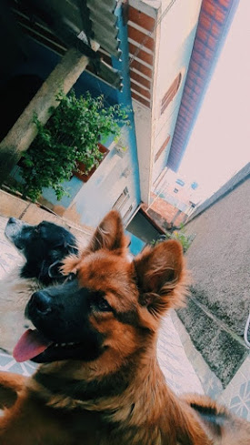
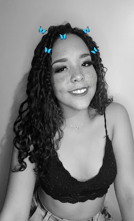

Bem Vinda, eu sou a Yasmin
Pra você que não me conhece, essa sou eu...
Vou te contar um pouco sobre mim.
Tenho 16 anos, nasci no dia 1 de Maio. Moro em Betim cidade metropolitana de BH. Moro com meus pais e meu irmão, tenho uma sobrinha de 5 anos. Sou apaixonada por animais, sou mãe de dois cachorros lindos o Spyke e a Nisce. Gosto muito de física, não me dou muito bem com a história. Sonho em em ser médica cardíaca ou ginecologista obstetra, caso nenhum desses der certo irei pra área de estética, e se na estética tembém não der certo, terei que vender minha arte na praia e morar em baixo da ponte.
O Que você não sabe sobre mim
- Sou Taurina, a passa fome, a nervosinha, teimosa, companheira e amiga pra todas as horas
- Sou viciada em filmes e séries
- Esse coisa de demonstrar sentimentos não é muito comigo
- Posso não demonstrar sentimentos mas sou bem emotiva as vezes
- Sou impaciente,sincera,tenho ciúmes de quem eu gosto e falo o que penso
- Sou tagarela, se não mandar eu calar a boca, eu continuo falando
- Amo cozinhar,dormir, dançar, maquiar e entre outros
Séries e Filmes Preferidos
- Friends
- Lúcifer
- Grey´s Anatomy
- A Menina e o Leão
- Teen Wolf
- Enola Holmes
- You
- Two and a Half Men
- Um Passado de Presente
- Crush a Altura
- Klaus
Coisas que Odeio
- Injustiça
- Pessoas que maltrata os animais
- Que me cutuquem
- Acordar cedo
- Me sentir insegura
- Que me contem mentiras
- Bolosonaro e seus seguidores
- Mousse de Maracuja
- Açaí
- Lasanha
- Strognoff
- Pizza
- Bolo no Pote
Comidas que eu Gosto
- Namorade de Aluguel
- O Garoto dos meus sonhos
- O Grito
Livros Preferidos

Essa sou eu e um pouquinho sobre mim...